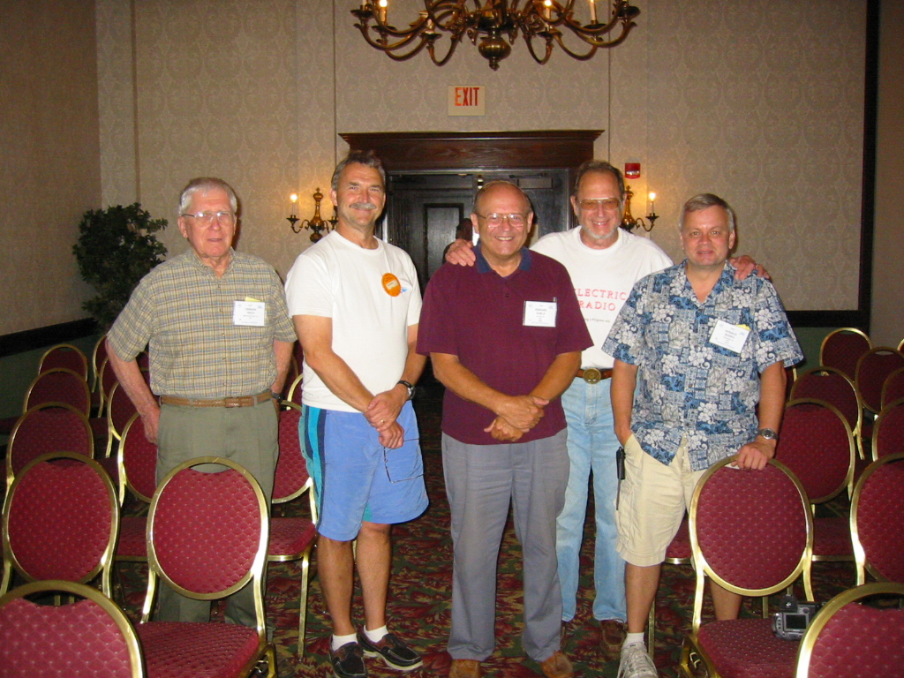
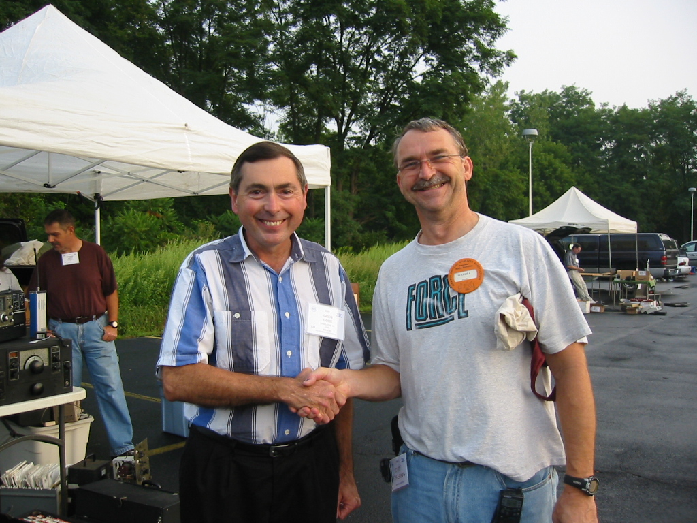
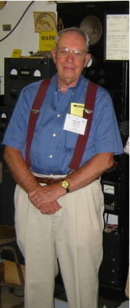
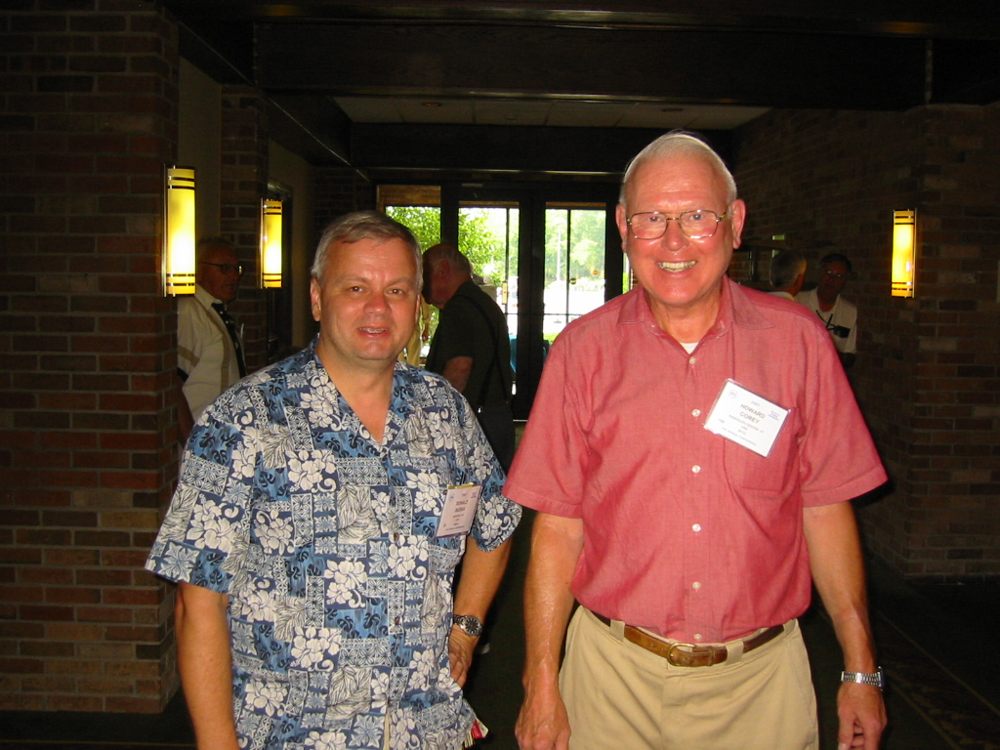

|
JMS
Attendance
and Activities

Taken after the
Amateur Radio Forum: l-r: Vern Yeich; Scott Freeberg, WA9WFA; Ed Gable, K2MP; Tim Walker,
W1GIG; Don Buska, N9OO. Ed gave an excellent presentation on
the history of the RME company at the forum.

Greg Gore,
WA1KBQ and Scott Freeberg, WA9WFA meet for the first time during the
fleamarket. Naturally there is a Millen era National NC-100XA off
to the left.

Bill Fizette,
W2DGB standing guard over the 1930's Millen station located at the AWA
Annex building.

Howard Corey, W1CL takes a few
minutes to talk with Don Buska, N9OO about some of the wonderful ham
equipment he had brought to the auction.
|